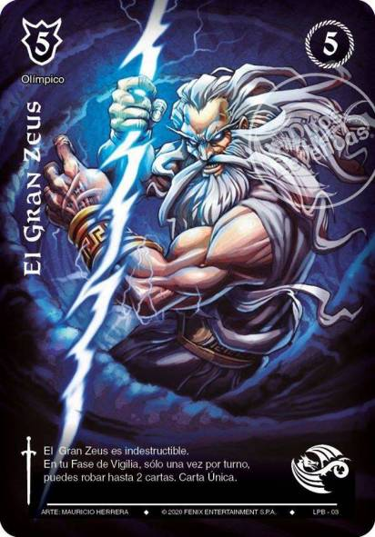

Mazo Olímpico

Características de un mazo Olímpico
Un mazo olímpico en Mitos y Leyendas se refiere a un tipo de mazo temático que utiliza cartas basadas en la mitología griega, especialmente aquellas relacionadas con los dioses olímpicos y personajes heroicos de esa tradición. Estas cartas provienen de expansiones del juego que exploran la rica mitología de la Antigua Grecia, con figuras como Zeus, Atenea, Hades, y otros dioses y héroes.
- Temática de la mitología griega: Las cartas representan a los dioses del Olimpo, héroes mitológicos y criaturas legendarias como el Minotauro o la Hidra.
-
Sinergia entre dioses y criaturas: Las cartas en un mazo olímpico suelen trabajar bien en conjunto, proporcionando bonificaciones o habilidades especiales cuando se tienen varias cartas relacionadas con los dioses olímpicos en juego.
-
Poderosos efectos y habilidades: Las cartas olímpicas tienden a tener habilidades poderosas que reflejan las capacidades divinas de los dioses griegos, como manipular el campo de batalla, destruir cartas enemigas o otorgar ventajas al jugador en términos de recursos o ataques.
-
Versatilidad en estrategias: Dependiendo de las cartas seleccionadas, un mazo olímpico puede tener un enfoque más agresivo (centrado en la ofensiva), de control (neutralizar al oponente), o incluso combos específicos que explotan las interacciones entre dioses y criaturas mitológicas.
El mazo olímpico es especialmente popular debido a la fuerza de las cartas mitológicas y la facilidad con la que se pueden combinar para crear una estrategia sólida en el juego.
Regresar a inicio